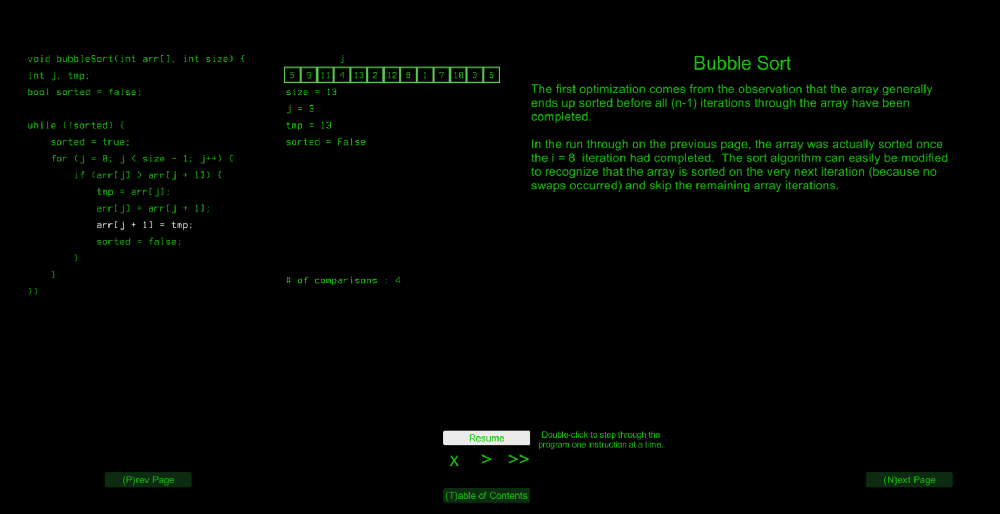
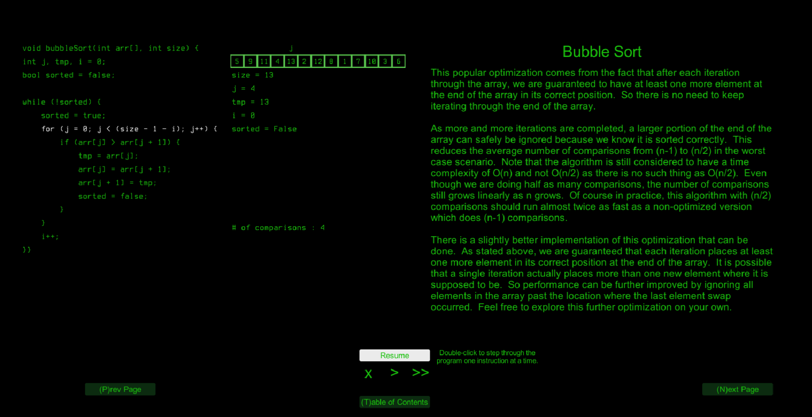
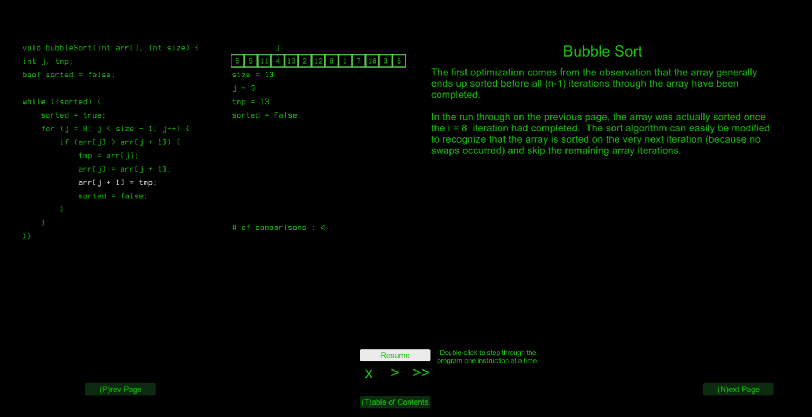
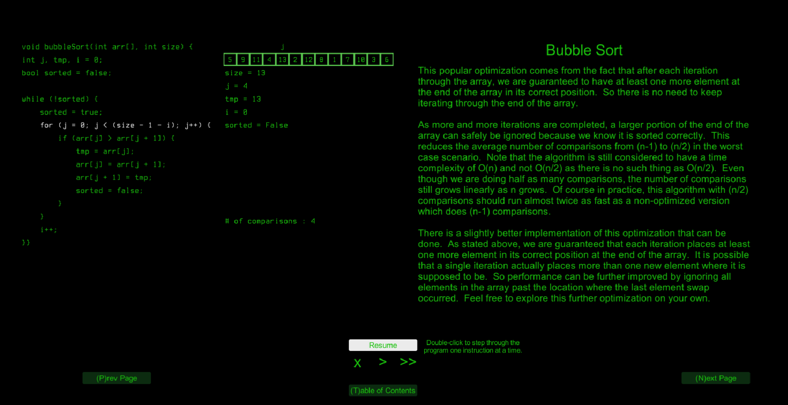

Screenshots
 



Send me feedback, questions, or ideas
Git repo: https://github.com/sdocy/dataStructures
I was trying to explain basic data structures and sorting/searching to my son who is an aspiring programmer and video
game designer. I thought it would be much easier to explain if I had a graphic display that showed what happens to the
data as the algorithm is executing. So I came up with this idea and I am quite happy with how it has turned out so far.
Currently, I have implemented three variations of bubble sort. I directly instrument the algorithm code to highlight each
line of code as it is executed and to update the variable values, array contents and comparison count as needed. See my
gist at bubbleSort() for an example of the instrumentation I have done.
My next big step is to figure out how to visualize recursive calls in an understandable manner. I am thinking that cloning
the program, array and variable text objects in separate, stacked windows might do the trick, at least for the small examples
I will be using.
I would love feedback on this prototype as well as the content I have provided for the algorithm. I plan to eventually
include basic information in the beginning on the data structures themselves (arrays, linked lists, trees) and more
sorting, searching and misc. other algorithms.
Video of my program in action
Play full screen so text is readable